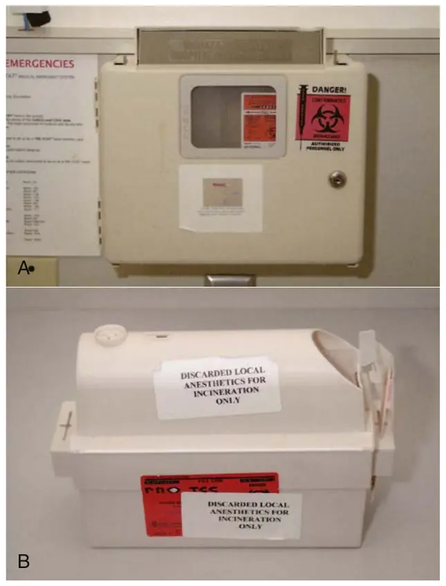
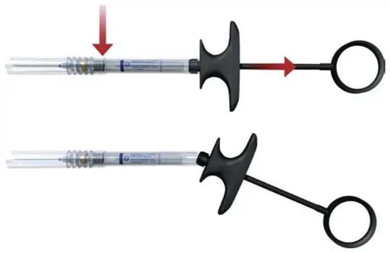

نسخه استخراجشده؛ ترجمه یا تأیید علمی انجام نشده است. وضعیت: captured
صبح روز بعد، دستیار سوزن نو را برمیدارد تا روی سرنگ فلزی بخش ببندد، ولی جایی برای پیچاندنش نیست. دیروز پس از کشیدن دندان، سوزن را باز کرده و در ظرف اجسام تیز انداخته است. چه چیزی گم شده؟

هر سوزن پس از مصرف دور ریخته میشود تا کسی با آن آسیب نبیند و فرد غیرمجاز دوباره از آن استفاده نکند. سوزن آلوده، و هر چیز آغشته به خون یا بزاق مثل کارپول، هرگز در سطل زبالهی روباز نمیرود.
گاهی وسط کار کارپول دیگری لازم میشود. با سرنگ هارپوندار:

کل کار حدود ۱۰ تا ۱۵ ثانیه است و ترتیب «اول کارپول، بعد سوزن» حفظ میشود. کارپول نیمهپر را برای بیمار دیگر نگه ندار؛ هر کارپول فقط برای یک بیمار است.
اشتباه رایج: تلاش برای باز کردن غلافی که ناخواسته قفل شده است. هرگز این کار را نکن؛ یک سرنگ ایمنی نو بردار.